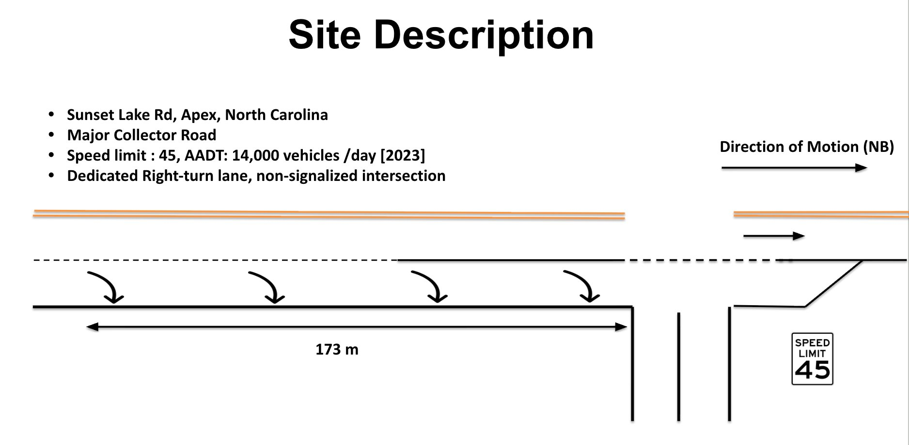
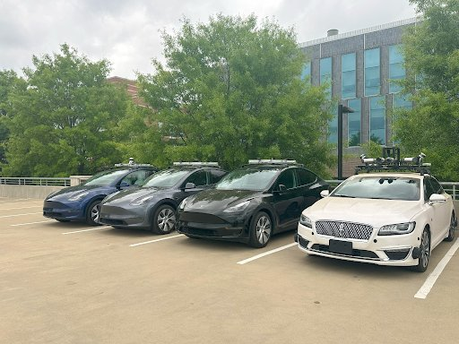

Methodology
Site selection, vehicle instrumentation, experiment design, and data collection protocol for the NC-tALC lane-changing study.
Objectives
Characterize and compare lane-changing behavior between tAV driving modes (FSD vs. ACC) and human-driven baselines — including gap acceptance, lateral trajectory, and time-to-complete.
Evaluate surrogate safety measures during LC events across a range of gap difficulties, providing an empirical basis for tAV safety analysis in mixed-traffic conditions.
Measure how FSD- and ACC-equipped vehicles respond as the cut-in target when another vehicle merges in front — capturing deceleration profiles, headway recovery, and driving style effects.
Location
Experiments were conducted on Sunset Lake Road in Apex, North Carolina — a four-lane Major Collector Road with a posted speed limit of 45 mph and an AADT of approximately 14,000 vehicles per day (2023). The site features a dedicated right-turn lane and a non-signalized intersection, providing a consistent, repeatable environment for lane-change trials under naturalistic traffic conditions.
The northbound segment used for data collection spans 173 m, offering sufficient run-up distance for vehicles to reach steady-state speed before the lane-change event is initiated.
45 mph
~14,000
173 m
Major Collector

Fig. 1 — Sunset Lake Road site layout showing the 173 m NB data collection segment
Instrumentation
Four vehicles were instrumented and operated as a coordinated platoon. Each vehicle played a specific role in the experiment and was equipped with high-precision sensors appropriate to that role.

Fig. 2 — The NC-tALC instrumented vehicle fleet: three Tesla Model Y vehicles and one Lincoln MKZ Hybrid
2018 Lincoln MKZ Hybrid. Travels in the target lane ahead of the platoon, maintaining a constant cruise speed of 40 mph to establish a stable leading gap.
2023 Tesla Model Y. The subject vehicle that initiates the lane change in LC experiments, or leads the platoon as a cut-in target in Responding experiments.
2023 Tesla Model Y. Follows immediately behind the gap the LCV targets. In Responding experiments, F1 is the primary responding vehicle receiving the cut-in.
2023 Tesla Model Y. Second responding follower, positioned behind F1. Captures secondary response and platoon-level disturbance propagation.
Protocol
The LCV drives in the Subject Lane and merges into the Target Lane in front of F1, which follows in the same lane. The LV sets a fixed speed in the Target Lane, establishing the downstream spacing. The LCV is operated in FSD mode; the LV travels at cruise; F1 and F2 follow in ACC at 40 mph.
| Variable | Levels | Values | Description |
|---|---|---|---|
| Downstream Spacing (DS) | 4 | 0, 1, 2, 3 | Gap to LV at lane-change initiation (relative units) |
| Desired Vehicle Spacing (DV) | 3 | 0, 1, 2 | LCV's desired gap to F1 after merging |
An external vehicle (LCV) cuts in front of F1, which is now the responding tAV. Both F1 and F2 are operated in either FSD or ACC. The driving style configuration of F1/F2 is varied between "Hurry" (H) and "Chill" (C) mode in Tesla settings, producing four combinations tested across multiple downstream spacings.
| Config | F1 Style | F2 Style | DS Levels | Trials |
|---|---|---|---|---|
| HH | Hurry | Hurry | 0, 1, 2, 3 | 20 |
| HC | Hurry | Chill | 0, 1, 2, 3 | 20 |
| CH | Chill | Hurry | 0, 1, 2, 3 | 20 |
| CC | Chill | Chill | 0, 1, 2, 3 | 20 |
Data
| Data Type | Sensor | Accuracy | Frequency | Vehicles |
|---|---|---|---|---|
| Horizontal Position | INS + RTK-GPS | 0.01 m | 20 Hz | LCV, F1, F2 |
| Speed | INS + RTK-GPS | 0.01–0.05 m/s | 20 Hz | LCV, F1, F2 |
| Heading | INS + RTK-GPS | 0.05–0.1° | 20 Hz | LCV, F1, F2 |
| Roll / Pitch | INS + RTK-GPS | 0.02–0.05° | 20 Hz | LCV, F1, F2 |
| Altitude | INS + RTK-GPS | 0.02 m | 20 Hz | LCV, F1, F2 |
| Forward Video | Sony ZV-1F | 1920×1080, 84° FOV | 30 fps | LCV |
| CAN Bus / Energy | ScanMyTesla | — | Variable | LCV, F1, F2 |
| LV Position | NovAtel Dual RTK | 0.01 m | 20 Hz | LV |
All positional data is post-processed to a common time reference. Lane boundary coordinates and pre-computed lateral/longitudinal distance columns are included in the released CSV files. See the Dataset page for full column definitions.